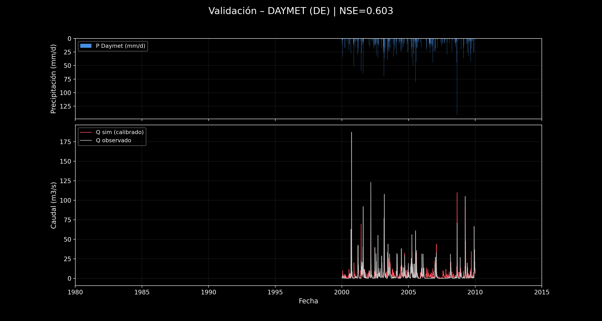

Datos
Series diarias CAMELS-US, atributos fisiográficos y forzamientos Daymet, NLDAS y Maurer, con trazabilidad y conversión explícita de unidades.
Calibración y validación en la cuenca USGS 02327100 (Sopchoppy River, Florida), comparando Daymet y NLDAS, Differential Evolution y Dual Annealing, ajuste global y eventos extremos.
Series diarias CAMELS-US, atributos fisiográficos y forzamientos Daymet, NLDAS y Maurer, con trazabilidad y conversión explícita de unidades.
Dos almacenamientos conectados, descarga rápida y lenta, evapotranspiración y auditoría diaria/acumulada de conservación de masa.
DE y DA con semillas fijas. Objetivo estándar NSE y objetivo compuesto J para estudiar el compromiso entre ajuste global y crecidas.
Periodo independiente 2000-2009 evaluado con NSE, KGE, hidrogramas, dispersión observada-simulada y curvas de duración.
